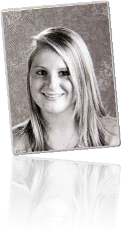
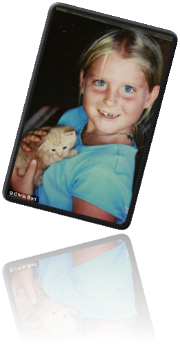

Meghan Elizabeth Trainor was born on December 22, 1993 to Kelli and Gary Trainor, jewellery store owners from Nantucket, Massachusetts.Trainor has two brothers: Ryan (born 1992) and younger brother Justin. Trainor began singing at age six, initially singing with her father at church. She began writing music at age 11, starting with her own arrangement of the song "Heart and Soul" (1938). Trainor attributes her early start to being born into a musical family.
Trainor's father was a music teacher and musician, and plays organ in a Methodist Church. Her great-uncle Bob LaPalm was a member of the rock band NRBQ, and Trainor's aunt and Trinidadian uncle, Lisa and Burton Toney, are soca music performers and songwriters.
At age 11, Trainor told her father that she wanted to become a recording artist and began writing songs, recording them using GarageBand from her MacBook. "She did a lot by ear," her mother recalls.Her father encouraged her to explore various musical genres. At age 12, Trainor began performing as part of Island Fusion, an "all-purpose party band" which performed covers, soca music, and Trainor's compositions. The band included her aunt, her younger brother, and her father. Trainor played piano, guitar, and bongo drum, and sang with the band for four years. By age 13, Trainor had written her first original song, "Give Me a Chance". When she was in the eighth grade, the family left Nantucket. They temporarily relocated to Orleans, Massachusetts before moving to North Eastham, Massachusetts, where the children attended Nauset Regional High School. At Nauset Regional High, Trainor studied guitar and was a substitute cheerleader. Additionally, Trainor sang and played trumpet in a jazz band for three years.
As a teenager, Trainor's parents encouraged her to attend songwriting conventions, and they took her to venues where production companies were searching for new artists and songwriters. At age 15, she took guitar lessons from former NRBQ band member Johnny Spampinato.During this time, Trainor used Logic Studio to record and produce her compositions, and later worked independently from a home studio that her parents constructed for her.


Biography